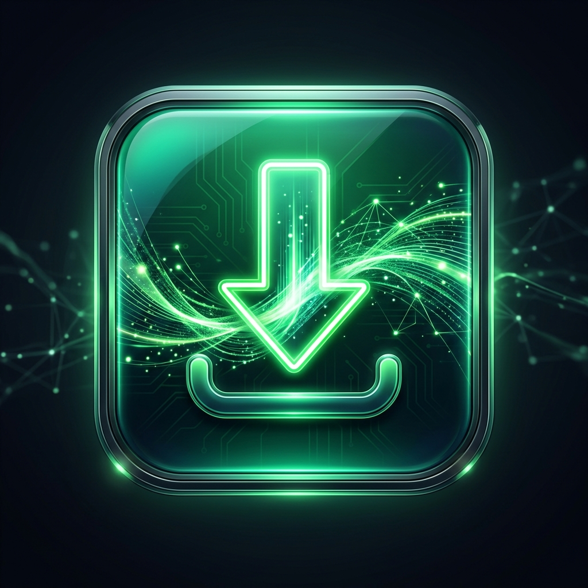

IDM Integration Twin
This extension connects automatically to the desktop app on
ws://127.0.0.1:9333
. No pairing needed — just keep the app running.
Captured downloads and page videos are sent straight to the app.
Checking connection…
Refresh status
Media Detection Display
Floating Button
Side Panel
Media Detection
Ignore media smaller than
KB
0 uses sensible per-format defaults (50 KB audio, 100 KB video). Streams are never filtered by size.
Never capture web pages (HTML documents)
Capture Override Keys
Hold to
force
capture
Alt
Ctrl
Shift
Insert
Hold to
let the browser
download
Alt
Ctrl
Shift
Delete